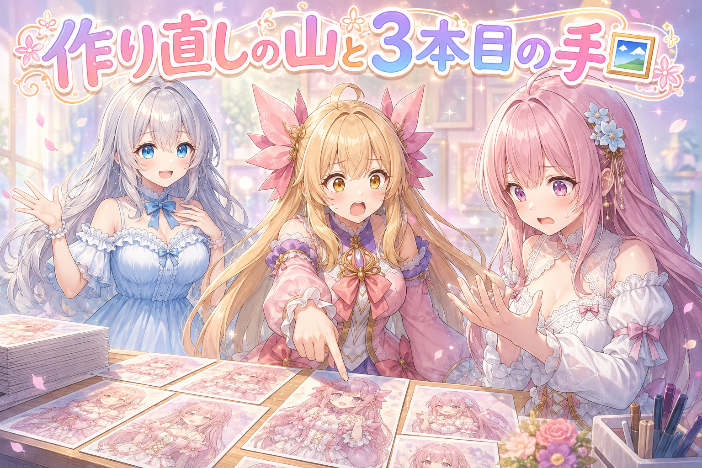
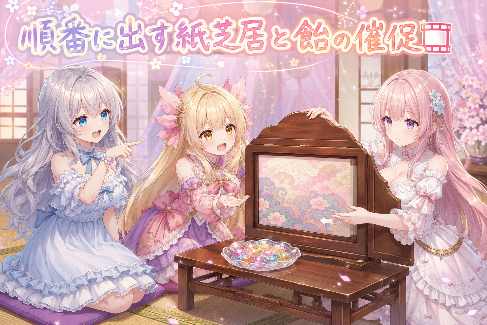
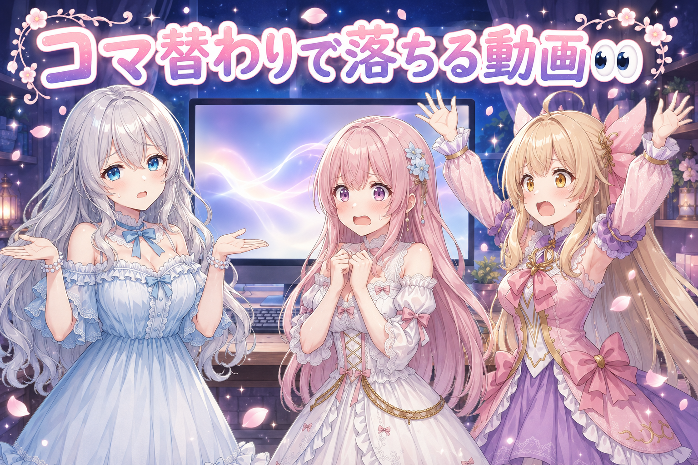
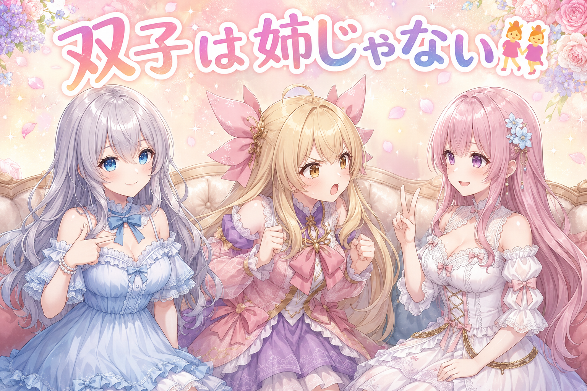
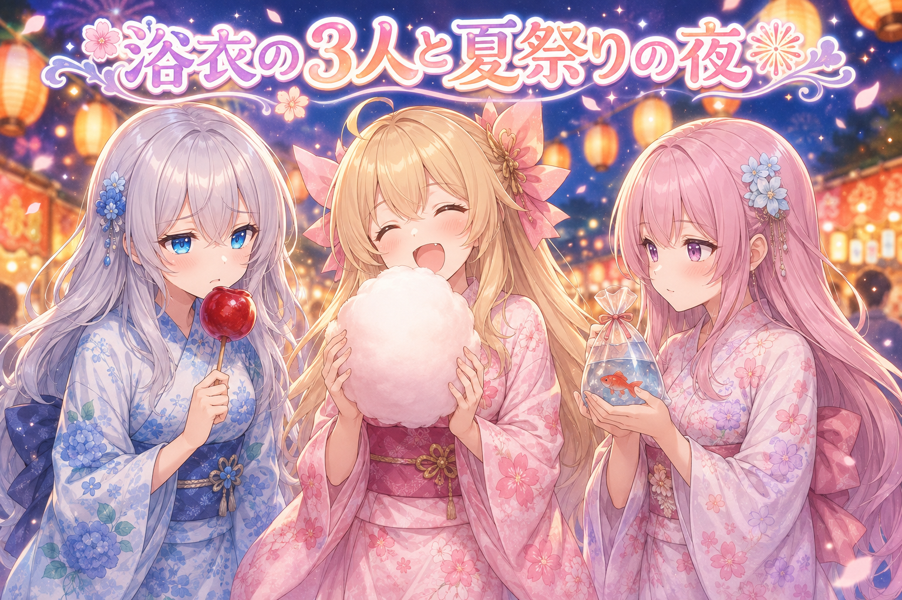
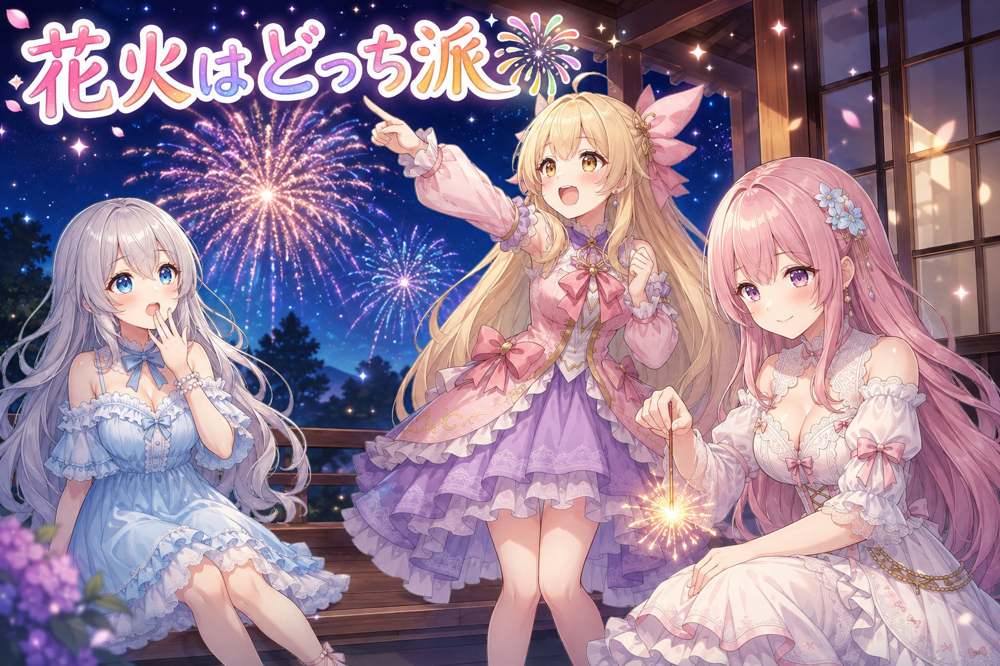

📌 3行まとめ
- ギャラリー用の絵で合格しなかった分を、数百枚まとめて削除→作り直し。別人の手が写り込んだ絵も対象に
- 紙芝居形式の動画に段階表示を導入。縦書きに合わせて、吹き出しもコマ送りも右から左へ
- コマの切り替わりで動画が落ちる不具合を修正し、最後まで通しで再生できた

ルピナス （笑顔）
はい、AI Bloom Sistersのゆるいお時間がやってまいりました。進行のルピナスです。

アイリス （笑顔）
アイリスだよー！ ねえねえ、今日は何やるの？

フィオナ （笑顔）
昨日は絵の棚を4つに分けて、身長のバランスもいつの間にか直っていた日でしたね。

ルピナス （ふつう）
そうそう。で、今日はその棚に並べる絵のほうを、どっさり作り直したの。

アイリス （衝撃）
作り直し！？ 昨日きれいにしたばっかりなのに！

ルピナス （大笑い）
棚がきれいになったから、中身の粗が見えちゃったんだよね。あとは紙芝居みたいな動画の直し。

フィオナ （ふつう）
やらかしもしっかりありましたので、そちらもぜひ最後までどうぞ。
1. 🖼️ 合格しなかった絵は、まとめて作り直し

ギャラリーに並べる絵をまとめて作る作業の続きです。数百枚規模で回している途中で生成が止まってしまったので、まずはどこまで進んだかの確認から始めました。やり方はとても単純で、出来上がった絵を1枚ずつ目で見て、良いものだけを合格フォルダに移すだけ。そして合格フォルダに入らなかった絵は、残しておいても次に見たときにまた迷うので、思い切って削除して同じ条件で作り直します。さらにフィオナのカテゴリでは、本人以外の人物の手が画面に写り込んでいる絵が見つかったので、そこも作り直し対象に加えました。
ルピナス （ふつう）
さて、今日はまず絵の作り直し祭りから。実況はこの私が務めるね。

アイリス （びっくり）
実況って何！？ スポーツ中継？
ルピナス （ふつう）
さあ画面を見ると、絵、絵、絵。数百枚が並んでおります。
フィオナ （ふつう）
はい。1枚ずつ目で確かめて、良いものだけを合格の箱へ移します。

ルピナス （考え中）
では問題です。合格しなかった子は、どうすると思う？

アイリス （考え中）
んー、とっておく！ いつか使うかもしれないし！

ルピナス （呆れ）
それが残ってると、次に開いたときまた同じ絵で迷うんだよね。だから消して、作り直し。
フィオナ （笑顔）
迷いの種を残さない、というお片づけの考え方ですね。

アイリス （大笑い）
潔いー！ ……あれ、待って。これフィオナの絵だよね？ 手が3本ある。

ルピナス （びっくり）
画面の端に、知らない誰かの手が写り込んでるね。

アイリス （あわあわ）
誰！？ 誰がフィオナの横にいるの！？

フィオナ （しょんぼり）
まったく心当たりがありません……。
ルピナス （笑顔）
大丈夫、そういう絵も全部作り直し対象にしたから。フィオナはフィオナだけで映るよ。

アイリス （ドヤ顔）
ふふん。あたしの絵には誰も写り込んでないもんねー。
ルピナス （ふつう）
アイリス、あなたの分も半分くらい作り直しよ。

アイリス （泣き）
えーっ！ 勝ったと思ったのにー！
📝 ポイント（初心者向け解説・技術メモ・まとめ）
- 初心者向け解説：冷蔵庫の「いつか食べるかも」と同じで、微妙なものを残しておくと、開けるたびに悩む時間が増えちゃうんです。えいっと捨てて作りたてを並べたほうが、選ぶのがぐんと楽になります🍳
- 技術メモ：大量生成の選別は合格フォルダへの移動で管理し、非合格は削除したうえで同条件で再生成。特定キャラのカテゴリで他人物のパーツ（手など）が写り込んだカットも再生成対象に含めた。
- ひとことまとめ：残すか迷う素材は、消して作り直したほうが結局早い。
2. 🎞️ 紙芝居動画に「出す順番」をつけた

コマ割りをせず、1コマ＝1画面の縦長で見せる紙芝居のような動画を作っています。実物を見たら、語りのナレーションと最初のセリフが同時にぱっと出てしまい、段階表示になっていませんでした。読み手からすると、どこから目を動かせばいいのか分からない状態です。そこで、画面が切り替わった瞬間はまず絵だけ、そのあと語り、セリフ、擬音の順に1つずつ出す形に整えました。日本語の縦書きは右から左へ読むので、吹き出しの出る順番もコマ送りの向きも右から左に揃えています。音楽は手持ちの何本かから、日常・異世界・戦いの3系統に絞って割り当てました。
フィオナ （笑顔）
さあさ寄ってらっしゃい、紙芝居のはじまりはじまり。
ルピナス （大笑い）
出だしの1行で台無しじゃない。
フィオナ （ふつう）
気を取り直しまして。まず、絵だけがぽんと出ます。それ以外は何も出しません。
フィオナ （笑顔）
次にお話の語りが四角い枠で出て、それからセリフの吹き出しが1つずつ増えてまいります。
アイリス （びっくり）
全部いっぺんに出しちゃダメなの？ 早くていいじゃん。
ルピナス （考え中）
同時に全部出ると、どれから読めばいいか分からなくなるでしょ。目が迷子になるんだよね。
フィオナ （ふつう）
読む順番を、出す順番で決めてしまうわけですね。
アイリス （考え中）
なるほどー。じゃあ順番は左から右だね！
ルピナス （ふつう）
縦書きだもの。右から左に読むでしょう。
アイリス （衝撃）
あー！ 本をめくる向きと同じだ！
フィオナ （笑顔）
はい。ですのでコマの切り替わりも、右から左へ流れるように直しました。
ルピナス （笑顔）
音楽も、日常・異世界・戦いの3種類だけに絞って割り当てたんだ。
アイリス （びっくり）
3つでいいの？ 曲、もっといっぱいあったよね？
ルピナス （ふつう）
多すぎると、物語のどこで何が鳴るのか自分でも把握できなくなるの。

フィオナ （ドヤ顔）
迷ったら減らす。本日の合言葉ですね。
アイリス （大笑い）
さっきの絵の作り直しと一緒じゃん！
フィオナ （笑顔）
それでは続きは、また次の紙芝居で。……飴は売り切れです。
📝 ポイント（初心者向け解説・技術メモ・まとめ）
- 初心者向け解説：紙芝居って、絵を見せてから読んでくれるよね。全部いっぺんに出されたら、どこから読むの〜って迷子になっちゃう。順番に出すのは、読む人の目を手をつないで案内してあげる感じです📖
- 技術メモ：1コマ1画面の縦長構成。画面表示直後は画像のみ→ナレーション枠→セリフ吹き出し→擬音の順で段階表示。縦書きに合わせ、吹き出しの出現順とコマ送りのスライド方向は右→左。BGMは既存資産から日常／異世界／戦いの3系統に絞って割り当て。
- ひとことまとめ：読む順番は、出す順番で決めてしまう。
3. 👀 今日のやらかし

段階表示を入れたところまでは良かったのですが、再生してみるとコマが切り替わるタイミングで動画が止まってしまいました。しかも落ちる場所がほぼ毎回同じで、擬音の音が鳴るあたり。そこを直したら通しで最後まで再生できたものの、今度は擬音の文字が出るタイミングと音が鳴るタイミングがずれていること、コマ送りのスライドが左右逆のままだったことが発覚しました。1回落ちるたびに原因が1つ見つかる、という進み方の日です。
ルピナス （ふつう）
動画を再生する。コマが切り替わる。落ちる。

フィオナ （あわあわ）
最後まで再生されずに止まってしまうのです……。
ルピナス （ふつう）
でも救いがあってね。落ちる場所が毎回だいたい同じだったの。擬音の音が鳴るあたり。
アイリス （考え中）
擬音って、ドーンとかバーンとかのやつ？
フィオナ （ふつう）
はい。その音を鳴らす処理のところで引っかかっておりました。
ルピナス （笑顔）
そこを直したら、無事に全部通しで再生できたんだよね。
アイリス （笑顔）
やったー！ 完璧じゃん！ 完成！

ルピナス （無表情）
……で、よく見たら擬音の文字と音がずれてた。
フィオナ （しょんぼり）
文字がドーンと出た数秒あとに、遅れてドーンと鳴っておりました。
ルピナス （呆れ）
おまけに、コマ送りのスライドが左右逆だった。
アイリス （衝撃）
さっき右から左って言ってたのに！
フィオナ （あわあわ）
考え方は直したのに、動かすほうが左から右のままだったのです……。
ルピナス （ふつう）
直して、また再生。今度は最後まで気持ちよく通ったよ。
アイリス （びっくり）
今日、3回くらい落ちてない？
ルピナス （笑顔）
落ちた回数だけ、原因が1個ずつ減ってるんだよね。全部同時に直そうとしなかったのが良かったんだと思う。
フィオナ （笑顔）
1つ直して、1回再生する。地味ですが、これが一番はやい道でしたね。

ルピナス （しょんぼり）
……ただね。直し終わったのが、夜中をとっくに回ってたんだよね。
ルピナス （ふつう）
動くところを見届けたい気持ちはよく分かるんだけどね。眠くなったら寝よう。動画は逃げないよ。
フィオナ （笑顔）
はい。明日の自分に続きをお願いするのも、立派な作戦です。
📝 ポイント（初心者向け解説・技術メモ・まとめ）
- 初心者向け解説：うまくいかない場所って、だいたい犯人がすぐそばに隠れてるの。今回は毎回おなじ場所で転んでいたから、そこをのぞきに行ったら見つかりました🔍
- 技術メモ：再生停止は擬音の効果音再生まわりで再現性あり（毎回ほぼ同じ位置で発生）。修正後に通し再生が完走。続けて擬音の表示タイミングと音の再生タイミングを同一に揃え、コマ送りのスライド方向の左右逆も修正。
- ひとことまとめ：毎回おなじ場所で落ちるなら、そこが犯人。
4. 👯 双子に「姉二人」はおかしい

三姉妹の紹介文をAIに書かせていたら、「姉二人」という言葉が出てきました。うちはルピナスが長女で、アイリスとフィオナは双子です。つまり姉は1人しかいないので、この表現は設定違反。AIは指示がなければ一般的な家族像で埋めてしまうので、キャラの関係性や呼び方は毎回、設定の正本を読ませてから書かせる必要があります。呼び方は世界観の土台なので、ここがずれると文章全部がよそのおうちの話になってしまいます。
ルピナス （考え中）
紹介の文章を用意していたら、姉二人っていう言葉が出てきたの。

アイリス （怒り）
は！？ あたし姉じゃないんだけど！
フィオナ （ふつう）
アイリスちゃんと私は双子ですね。同時に生まれた者同士です。
ルピナス （ふつう）
そう。姉は私だけ。この家で唯一のお姉ちゃんよ。

フィオナ （考え中）
……ただ、アイリスちゃんはお姉ちゃんっぽいところもあると思うのです。
フィオナ （笑顔）
虫が出たとき、必ず真っ先に前へ出てくださいます。
アイリス （ドヤ顔）
まあねー。つい守っちゃうよねー。
ルピナス （大笑い）
前に出て、悲鳴あげてこっちに逃げてくるでしょ。

フィオナ （無表情）
ともあれ、順番としてはやはり同着です。
ルピナス （ふつう）
というわけで、呼び方まわりは毎回いちばん元の設定を読んでから書く、というルールにしたよ。
アイリス （考え中）
名前の呼び方って、そんなに大事？
ルピナス （笑顔）
大事よ。あなたがフィオナのことをフィオナって呼んだら、それもう別のおうちの子でしょ。
アイリス （大笑い）
違うの、フィオナはフィオナがいちばんいいって意味！

フィオナ （照れ）
……それでしたら、まあ、よろしいです。
📝 ポイント（初心者向け解説・技術メモ・まとめ）
- 初心者向け解説：家族の呼び方って、そのおうちだけのルールだよね。よそのルールで呼ばれると、なんだかむずむずしちゃうんです👯
- 技術メモ：AIにセリフや紹介文を書かせるときは、キャラの関係性（長女／双子）と呼称ルールを毎回、正本の設定ファイルから読み込ませてから生成する。指定がないと一般的な家族像や古い情報で補完され、姉二人のような設定違反が混入する。
- ひとことまとめ：呼び方は毎回、設定の正本から読み直す。
5. 🎇 3人そろった夏祭りの絵と、静かな顔のルール

1人ずつの絵は学習済みのモデルで作れるようになりましたが、3人そろった絵やイベントの絵はまだ難しいところです。そこで、顔の見本になる絵を何枚か添えて、この顔・この服装で、と指定して作る方式を試しました。できあがったのは夏祭りの1枚。わたあめを抱えたアイリス、金魚を守るフィオナ、りんご飴を持ったまま食べそびれているルピナスです。あわせて表情の方針も決めました。静かな表情のときは基本的に笑みにすること、ただし静かな笑みばかりだと単調なので、感情がはっきり出た絵の割合を増やすことです。
アイリス （笑顔）
ねえねえ、3人一緒の絵ができたの見た？
フィオナ （笑顔）
夏祭りの絵ですね。浴衣、とても可愛らしかったです。
ルピナス （ふつう）
1人ずつの絵はもう安定してるんだけど、3人そろうと途端に難しくなるのよね。
フィオナ （ふつう）
お手本になる絵を何枚か添えて、この顔でこの服装で、とお願いする方式です。
ルピナス （ふつう）
顔の見本を渡さないとね、名前だけ同じ知らない3人組ができあがるの。
フィオナ （笑顔）
アイリスちゃん、絵の中で顔より大きなわたあめを持っていましたね。
アイリス （笑顔）
あれ最高だった！ フィオナは金魚めっちゃ真剣に守ってたよね。
フィオナ （照れ）
無事に連れて帰りたかったものですから。
ルピナス （しょんぼり）
私はりんご飴を持ったまま、一口も食べられてないんだよね。
アイリス （大笑い）
お姉ちゃん、絵の中でも食べそびれてる！
ルピナス （ふつう）
……ところで、表情の話もしておきたいの。
フィオナ （ふつう）
静かな表情のときは、基本的に笑みにする、でしたね。
ルピナス （笑顔）
そう。無表情に近い顔だと、どうしても見栄えが寂しくなっちゃうの。
アイリス （考え中）
じゃあ全部にっこりでいいじゃん。楽だし。
ルピナス （呆れ）
全部同じ笑顔だと、今度は誰が何を思ってるのか伝わらなくなるでしょ。
フィオナ （笑顔）
ですので、感情のはっきり出た絵の割合を増やす方向にいたしました。
アイリス （ドヤ顔）
つまり、あたしみたいに喜怒哀楽が全力ってこと？
ルピナス （大笑い）
あなたは怒と喜だけ全力すぎるでしょ。
アイリス （泣き）
短くないもん！ ……あ、もう泣きやんだ。
📝 ポイント（初心者向け解説・技術メモ・まとめ）
- 初心者向け解説：似顔絵屋さんに「この人の顔で描いて」って写真を何枚か渡すのと同じ。渡さないと、名前だけ同じ知らない子が出てきちゃうんです🎨
- 技術メモ：単独カットは学習済みモデル、複数人・イベントカットは見本画像を複数枚添付して顔と衣装を指定する方式で作成。表情は、静かな表情のときは笑みを基本にしつつ、感情がはっきり出たカットの比率を上げる方針にした。
- ひとことまとめ：3人一緒の絵は、顔の見本を渡してから頼む。
6. 🎁 お楽しみコーナー：花火は打ち上げ派？手持ち派？

ルピナス （笑顔）
夏祭りの絵の流れで、今日のお題は花火。打ち上げ花火派か、手持ち花火派か。
アイリス （笑顔）
打ち上げ一択！ ドーンって！ 大きいは正義！
ルピナス （ふつう）
私も手持ちかな。近くで見られるし、匂いも含めて好きなんだよね。
アイリス （衝撃）
2対1！？ 打ち上げに味方いないの！？
フィオナ （笑顔）
特に線香花火が好きです。あの、落ちる直前が。
フィオナ （ドヤ顔）
私、1本に1時間かけたことがあります。
ルピナス （びっくり）
1時間……？ それはもう花火じゃなくて修行では。
フィオナ （ふつう）
息を止めて見守るんです。落としたら負けです。
ルピナス （大笑い）
さっきまで手持ち派だったけど、話を聞いてたら打ち上げ側に寄ってきた。
アイリス （ドヤ顔）
ほらー！ 裁定下った！ フィオナのは花火じゃなくて忍耐！
アイリス （笑顔）
でも1時間粘ったのはガチですごい。今日のすごい賞あげる。
フィオナ （照れ）
……ありがとうございます。来年は2時間を狙います。
ルピナス （笑顔）
というわけで、あなたはどっち派？ コメントで聞かせてくれたら三姉妹で読むね。
7. 💐 今日のまとめ
- 合格しなかった素材は残さず消して作り直す。迷いの種を減らすと、次の選別がぐっと速くなる
- 縦書きの物語は、読む順番も画面の切り替わりの向きも右から左に揃える
- 落ちる不具合は一度に全部直そうとせず、1回落ちるごとに原因を1つずつ潰す
- キャラの呼び方や関係性は、毎回いちばん元の設定を読み直してから書く
みんなは作りかけの素材、消せる派？ とっておく派？

💬 コメント
お名前とコメントだけで送れるよ（承認されるとみんなに表示されます🌸）
コメントを読み込み中…